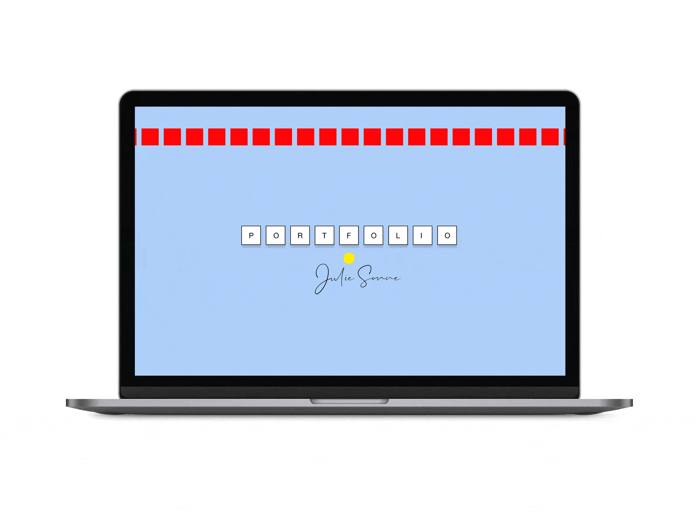
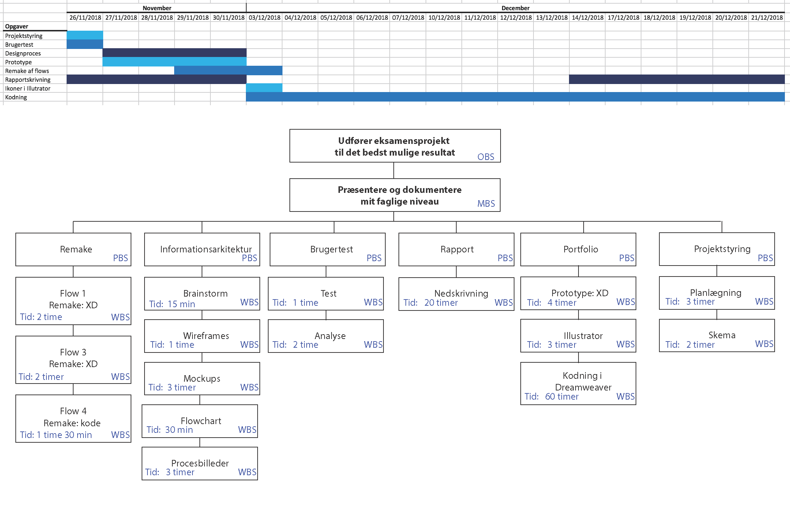

Min første portfolio

Proces
Min første portfolio er et produkt af min læring fra første semester på min uddannelse. En portfolio, som under flere forløb blev udviklet og forbedret i takt med at min viden blev større. Det har været under disse forløb, jeg har prøvet at kode en hjemmeside fra bunden for første gang, hvordan den bliver responsiv, lært vigtigheden ved brugertests og meget mere! Her kan man læse om min læring og vej til det endelige produkt.
Drøm din portfolio
Udviklingen af min første prototype med Adobe XD. I dette afsnit kan du læse om mine overvejelser ift. typografi og farvevalg.
Overskriften vil være brudt op i kasser, dette er både et forsøg på at skabe en munter og legende stemning og give sitet en anelse retro feel. Skyggerne under kasserne er brugt, da det giver sitet mere dimension. Brødteksten og underoverskrifterne er Helvetica eller Sans-serif, idet den er simpel og letlæselig for brugeren, især til skærmlæsning. Forneden se nogle udklip af XD prototypen.
Farvevalget er inspireret af moodboardet, som evner at formidle den ønskede stemning for portfolioen. Den rolige blå pastelfarve (HEX #AFCEF8) er hjemmesidens basisfarve og sammen med den røde (HEX #FF0000) skaber de en temperatur-kontrast. Den solgule farve (HEX #FFE910) er inddraget både for at skabe en munter stemning og for at give et visuelt hint til efternavnet Sonne, som på tysk betyder sol. Farvernes betydning og hvordan disse kan fremstå for en bruger er også undersøgt. Den lyseblå giver sitet en visuel ro, som kan virke tillidsvækkende og samtidig vise kreativitet og intelligens. Den røde kan fremkalde følelser som larm og energi. Kombinationen af disse ramte fuldstændigt det ønskede udtryk og derfor ses det samme farvevalg også i de senere forløb.
Byg din portfolio
Under dette forløb blev jeg introduceret til læren om HTML5, CSS3, layoutprincipper, samt optimering af billeder og grafik til web. Et forløb, hvor jeg for første gang fik stiftet bekendtskab med GitHub, kodet i Dreamweaver, udviklet og uploadet et website til eget domæne. Dette var mit første forsøg på at kode en hjemmeside fra bunden, som testede mine evner og afspejlede mit daværende niveau indenfor kodning og design. Herunder kan du læse om, hvilke overvejelser og tanker, jeg havde til projektet.
I det første forløb udviklede jeg en prototype af min drømme-portfolio og det blev mit udgangspunkt.
1. I prototypen var menuen placeret på en ekstern side kaldet ’Indhold’ og resultatet af dette var en uoverskuelig navigation for brugeren. Målet under dette forløb var derfor – fremadrettet - at skabe en menu, som er placeret vandret i toppen. Denne ændring vil give brugeren en bedre mulighed for at lokalisere menuen, samt få et overblik af hjemmesidens indhold.
2. I denne udgave blev der også tilføjet siden ’Omkring’, en side der blev implementeret fordi det er vigtigt at give brugeren en mulighed for at få et indblik i hvem jeg er.
3. En anden ændring, der blev foretaget var tilføjelsen af siden ’Projekter’, som samler alle opgaver og projekter under en side. På denne side blev der gjort brug af et grid. Griddet består af billeder, der alle indeholder elementer, som matcher indholdet på siden billedet fører hen til, som f.eks. en tegning, et moodboard eller en illustration fra Illustrator. Dette var et forsøg på at skabe en rød tråd mellem siden ’Projekter’ og undersidens indhold.
Eksamensprojekt
Dette er min vej frem til en nytænkende og forbedret udgave af portfolioen. Navigationen er i højsædet, det er nemlig vigtigt at brugeren kan have sin færden på sitet, uden nogle problemer. Under dette forløb trak jeg på al den viden, som jeg har fået i løbet af det første semester.
Administration af tid og kortlægning af arbejdsopgaver, med brug af værktøjer fra undervisningen, blev mit første trin i dette projekt. Projektstyring med OBS, MBS, PBS og WBS er lavet i Adobe Illustrator og Gantt-kortet blev udarbejdet i Excel, begge kan ses på billedet forneden.
Gennem en segmenteringsproces er målgruppen blevet valgt, hvorefter to personas blev dannet, med henblik på segmenteringen. Disse benyttes til at etablere, beskrive og afklare hvilke behov målgruppen kan have.
Se målgruppe og personas her
Mit næste trin var testning af den originale udgave af portfolien, fra det tidligere forløb “byg din portfolio”, for at undersøge om navigationen fungerer efter hensigten og om brugeren oplever mangler eller løber ind i andre problemer.
Se hele testen her
Brugen af informationsarkitektur til design, udvikling og strukturering af hjemmesiden er specielt et nyttigt område til at systematisere og planlægge opgaven. Denne proces er lavet med henblik på resultaterne fra brugertesten. Herunder har jeg beskæftiget mig med: brainstorm, sitemap, wireframes, mockups og flowchart.
Se procesbilleder her
Typografien og farvevalget er som nævnt i tidligere afsnit genvalgt, idet de har et udtryk som gerne skulle forblive. Der er dog foretaget nogle enkelte ændringer. Signaturen på forsiden er nu min egen håndskrift og den er inddraget for give et personligt touch. Tekstens komposition er inspireret af online-aviser. Den mindre linjelængde samt brugen af overskrifter, skriftformer og skydning mellem linjerne, kan forhåbentligt medvirke til at give brugeren et bedre overblik af sidens indhold.
C.R.A.P-modellen er brugt til at forsikre, at brugerne vil opfatte hjemmesiden som overskuelig og nem.
| Contrast | Kontrast imellem underoverskrifter og brødtekst er tydelig, så brugeren kan se, hvornår afsnittet starter og slutter. Der er også benyttet en temperatur-kontrast, mellem den blå og røde farve. |
| Repetition | Layoutet, farver og typografi gentager sig selv, for at skabe en rød tråd på hjemmesiden. |
| Alignment | Ideen bag layoutet var at skabe en komposition, der var så symmetrisk som mulig. Den gule prik blev hjemmesidens omdrejningspunkt til at placere elementer og få dem til at flugte. Dette er gjort, så brugeren vil få en følelse af, at elementerne er placeret med omtanke. |
| Proximity | Billedtekst og billeder er placeret i forhold til hinanden, så brugeren kan se at de er sammenhørende. |
Portfolioen er kodet med Simple Grid, udviklet af Dallas Bass, som er blevet justeret og navngivet efter behov og hjemmesiden er responsiv til desktop, tablet og mobil. Grundet brugen af Simple Grid, ses brugen anvendelsen af tagget div ofte, til at lave mindre eller større container, som kan placeres og bestemme størrelsen som ønsket. Hjemmesidens responsive design er undervejs blevet testet om det virker efter hensigten. Der er blevet testet på så mange forskellige formater som muligt, både på desktop, tablets og mobil.